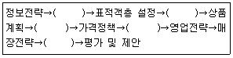
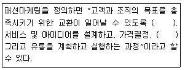
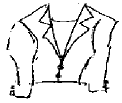
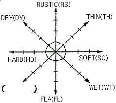

패션머천다이징산업기사 (2011-03-20 기출문제)
1과목: 패션마케팅
1. 리테일 머천다이징의 과정 중 ()안에 들어갈 내용이 순서대로 배열된 것은?

- 점포전략, 판매계획, 구매활동, 상품관리, 프로모션 전략
- 점포전략, 구매활동, 판매계획, 상품관리, 프로모션 전략
- 판매계획, 전포전략, 구매황동, 프로모션전략, 상품관리
- 판매계획, 상품관리, 구매활동, 프로모션전략, 점포전략
(정답률: 알수없음)

2. 의류제품의 가격 정책에 대한 설명으로 옳은 것은?
- 패션 상품은 부가가치가 큰 상품이기 때문에 가격할인의 폭이 작다.
- 스타일에 독점적 경쟁력이 없을 깨 가격경쟁에서 자유로울 수 있다.
- 유행의 후기에는 적은 폭의 가격 할인으로도 새로운 수요가 창출한다.
- 고가의 가격 정책을 가질 때에는 유행성이나 디자인의 독점성이 높은 상품을 갖추어야 한다.
(정답률: 알수없음)
3. 다음 중 패션기업의 생산기획 업무가 아닌 것은?
- 패턴디자인과 생산기술
- 생산의뢰와 납기계획
- 생산 원가계획
- 원부자재 조달
(정답률: 알수없음)
4. 다음 패션 정보원들 중 상업적 정보원전에 해당되는 것은?
- 시험구매
- 신문기사
- 친구
- 판매원
(정답률: 알수없음)
5. 패션마케팅의 핵심개념에서 소비자가 느끼고 있는 필요를 만족시킬 수 있는 구체적인 수단은?
- 필요(needs)
- 욕구(wants)
- 수요(demands)
- 구매(buying)
(정답률: 알수없음)
6. 다음 중 리테일 머천다이징의 요소가 아닌 것은?
- 점포
- 고객
- 생산
- 상품
(정답률: 알수없음)
7. 패션 유통경로 중 상품에 대한 판매와 재고는 유통업체에서 책임지며, 제조회사는 상품기획과 생산만 하는 형태는?
- 위탁판매제도
- 완사입제도
- 위탁사입제도
- 절충사입제도
(정답률: 알수없음)
8. 소재의 발주에서 기획ㆍ설계단계에 해당되지 않는 것은?
- 소재에 관한 정보수집 및 분석
- 생지의 결정
- 시기, 수량, 품질, 가격 및 구입처 선정
- 수량, 납기 및 납품방법 결정
(정답률: 알수없음)
9. 다음 중 패션산업의 특성에 대한 설명으로 틀린 것은?
- 패션산업은 고부가가치 산업이다.
- 패션산업은 상표의존도가 높은 산업이다.
- 패션산업은 정보지향적 산업이다.
- 패션산업은 위험부담율이 낮은 산업이다.
(정답률: 알수없음)
10. 포괄적 의사결정이 해당되는 구매행동 유형은?
- 고관여 구매형
- 다양성 추구형
- 상표충성적 구매형
- 관성적 반복구매형
(정답률: 알수없음)
11. 최적의 시장세분화가 이루어진 다음 바람직한 마케팅전략이 수립되기 위해서 갖추어야 할 조건이 아닌 것은?
- 각 세분시장내 고객은 가능한 한 동질성을 유지하고 세분시장간에는 이질성을 갖도록 한다.
- 자사가 제공하는 마케팅믹스 변수에 대하여 세분시장내 고객들은 가능한 한 유사하게 반응하고 다른 세분시장에 속한 소비자 모두 동일하게 반응하도록 세분화되는 것이 바람직하다.
- 각 세분시장이 충분한 매출과 이익이 실현할 수 있는 규모를 갖도록 세분화가 이루어져야 한다.
- 각 세분시장이 효과적으로 도달될 수 있는 마케팅믹스프로그램이 도입되어야 한다.
(정답률: 알수없음)
12. 포지셔님 맵에 대한 설명으로 틀린 것은?
- 포지셔닝 맵은 여러 개의 경쟁 상표를 동일 공간에 위치시켜봄으로써 경쟁전략을 수립하는데 사용한다.
- 소비자 인지도 맵(perceptual map)은 생산자가 추구하는 상품의 위치를 표시한다.
- 소비자 선호도 맵(preference map)은 소비자의 상표선호 정도를 측정하여 구성한다.
- 포지셔닝에서 상품의 실제적 특성보다 소비자의 마음에 어떻게 위치하는가를 파악하는 것이 더 중요하다.
(정답률: 알수없음)
13. 패션머천다이징의 책임에서 상품기획 입안, 판매기획입안, 생산 물류기획입안, 예산기획 입안등이 해당되는 것은?
- 목표설정 책임
- 정보분석 책임
- 조직운영 책임
- 의사결정 책임
(정답률: 알수없음)
14. 기업의 마케팅 시스템의 핵심을 구성하는 네 가지 변수의 결합인 4P's는?
- 계획(program), 제품(product), 가격(price), 유통(place)
- 제품(product), 가격(price), 유통(place), 촉진(promotion)
- 제품(product), 가격(price), 사람(people), 촉진(promotion)
- 제품(product), 가격(price), 포장(package), 유통(place)
(정답률: 알수없음)
15. 소매업자가 제조업자를 조사하고 소비자가 원하는 상품을 선택하여 소비자에게 서비스를 제공하는 의류제품의 가장 전형적인 마케팅 경로는?
- 직접 마케팅 경로(direct marketing channel)
- 제한 마케팅 경로(limited marketing channel)
- 확장 마케팅 경로(extended marketing channel)
- 대량 마케팅 경로(mass marketing channel)
(정답률: 알수없음)
16. 다음 중 ()안에 들어갈 용어를 순서대로 나열한 것은?

- 패션제품, 촉진
- 이윤, 마케팅
- 욕구, 판매
- 패션트랜드, 광고
(정답률: 알수없음)
17. 상품계획의 목적이 아닌 것은?
- 최적의 상품
- 최적의 가격
- 최적의 장소
- 최적의 판매원
(정답률: 알수없음)
18. 상품수준에 의한 분류에서 가장 높은 비율을 차지하는 상품군은?
- 프레스티지(prestige)
- 베터(better)
- 볼륨(volume)
- 버짓(budget)
(정답률: 알수없음)
19. 기업이 패션예측을 위하여 자료를 수집, 분석하는 이유가 아닌 것은?
- 변화하는 소비자 욕구를 정확히 예측하려고
- 미래에 소비자가 구입할 패션디자인을 현시점에서 알기 위하여
- 소비자에게 미래에 어떤 패션디자인을 구입할 것인가를 직접적으로 묻기 위하여
- 패션시장의 전체수요 및 자사제품 수요에 영향을 줄 수 있는 요인을 분석하기 위하여
(정답률: 알수없음)
20. 효율적인 타임스케줄을 작성할 때 기준이 되는 시점은?
- 매장전개 시점
- 상품기획 시점
- 디자인 시점
- 생산개시 시점
(정답률: 알수없음)
2과목: 패션소재기획
21. 소재업체의 소재기호기 과정이 아닌 것은?
- 소재방향 설정
- 소재 선정
- 수주
- 배달
(정답률: 알수없음)
22. 선진국을 중심으로 환경에 관한 기준을 만들어 친환경적인 방법에 의해서 생산되는 모든 제품에 부여하는 품질 마크(mark)는?
- 골드 다운(gold down) 마크
- 굳 헬스(good health) 마크
- 항균방취가공 마크
- 에콜로지(ecology) 마크
(정답률: 알수없음)
23. 하이케트한 미래지향적 트렌드에 적합한 소재가 아닌 것은?
- 레이스
- 패팅
- 퀼팅
- 우레탄 백 폼
(정답률: 알수없음)
24. 자외선 차단소재의 용도로 적당하지 않은 것은?
- 잠옷
- 모자
- 양산
- 골프웨어
(정답률: 알수없음)
25. 아크릴 섬유의 특성에 대한 설명으로 틀린 것은?
- 공정수분율은 2%이다.
- 내열성이 우수하여 200℃ 정도의 온도에서도 안전하다.
- 내약품성이 좋아 유기용매에 안정하다.
- 레질리언스가 우수하여 구김이 잘 생기지 않는다.
(정답률: 알수없음)
26. 섬유장에 의한 실의 분류로 옳은 것은?
- 순사-혼밤사
- 직사-편사
- 방적사-필라멘트사
- 단사-함연사
(정답률: 알수없음)
27. 하절기에 사용하고 남은 재고인 소모 크레이프(crepe)소재를 추동용으로 계속 사용하기 위해서 필요한 가공은?
- 신징(singeing)
- 밀링(milling)
- 멜톤(melton)
- 클리어 컷(clear cut)
(정답률: 알수없음)
28. 정보자료 분석 및 트렌드 회의할 때의 세부업무가 아닌 것은?
- 국내외 트렌드 분석
- 아이템별 소재 맵 구성
- 국내외 트렌드 환경, 컨셉 및 자료 분석
- 국내외 전반적인 마켓 환경 및 시장조사
(정답률: 알수없음)
29. 의류업체들이 제품 방향을 결정하는데 가장 가시적이고 함축적으로 그 시즌의 제품기획 방향을 보여주는 것은?
- 이미지 맵
- 컬러 맵
- 소재 맵
- 코디네이션 맵
(정답률: 알수없음)
30. 트렌드별 소재 중 퍼지 트렌드 소재에 해당되는 것은?
- 니트 소재
- 데님 소재
- 강연 소재
- 샌드워싱 소재
(정답률: 알수없음)
31. 의류의 판매시점과 생산시점을 가급적 가까이해서 위험부담률을 줄이려는 시스템은?
- 배달 시스템(delivery system)
- 피드백 시스템(feed back system)
- QR 시스템(quick response system)
- POS 시스템(point of sales system)
(정답률: 알수없음)
32. 피혁에 대한 설명 중 옳은 것은?
- 누벅은 어린 양이나 송아지 속가죽을 부드럽게 보플린 가죽이다.
- 말보로는 가죽표면을 코팅 처리하여 광택을 낸 소재이다.
- 나파는 가장 일반적인 피혁제품으로 내구성은 좋으나 섬세하지 못하다.
- 양파는 부드러우며 윤기가 나고 섬유질의 밀도가 높아 강도가 강하다.
(정답률: 알수없음)
33. 의류의 소재로 종이, 메탈, 플라스틱, 부직포 등의 파격적인 소재들을 사용하기 시작한 디자이너는?
- 샤넬(Channel)
- 이세이 미야케(lssey Miyake)
- 파코라반(Paco Rabanne)
- 프라다(Prada)
(정답률: 알수없음)
34. 세룰로스의 친수기가 모두 없어져서 합성섬유처럼 열가소성이 우수하므로 장식적인 주름을 잡ㄴ은 등 열고정이 가능하고, 촉감이 산뜻하고 광택이 특이한 장점을 가진 섬유는?
- 레이온
- 폴리에스테르
- 트리아세테이트
- 구리암모늄레이온
(정답률: 알수없음)
35. 소재의 감성용어와 특징이 바르게 연결된 것은?
- 러프(rough)-매끈함, 평평한
- 라이트(light)-두꺼운, 부피있는
- 드라이(dry)-건조한, 마른
- 웨트(wet)-실키 터치, 부드러운
(정답률: 알수없음)
36. 인디고 데님 소재를 페이드 아웃(face out)시켜 빛 바랜 듯한 이미지로 패션성을 부여하는 워싱 가공이 아닌 것은?
- 스톤 워싱(stone washing)
- 케미털 워싱(chemical washing)
- 논 워싱(non-washing)
- 바이오 워싱(bio washing)
(정답률: 알수없음)
37. 알칼리 감량 가공을 통하여 실크 같은 촉감을 주는 소재로 일명 물실크(washable silk)로 통하는 섬유는?
- 비스코스레이온
- 폴리아미드
- 폴리에스테르
- 아크릴
(정답률: 알수없음)
38. 다음 중 헤어섬유가 아닌 것은?
- 알파카(alpaca)
- 캐시미어(cashmere)
- 비큐나(vicuna)
- 태피터(taffeta)
(정답률: 알수없음)
39. 열에 대한 성질을 이용하여 벌크 가공한 후 양모를 대신하여 편성물에 많이 사용되는 섬유는?
- 아크릴
- 아라미드
- 라이크라
- 고어텍스
(정답률: 알수없음)
40. 에콜로지 트랜드 소재 중 거친듯한 이미지를 주는 소재가 아닌 것은?
- 마섬유
- 태번수의 면직물
- 피치 스킨 소재
- 엠보싱 가공 소재
(정답률: 알수없음)
3과목: 유통관리 및 광고
41. 국내 백화점의 패션 유통결로로 가장 가까운 유형은?
- 대리점형
- 직영점형
- 특양점형
- 재래시장형
(정답률: 알수없음)
42. 인적 판매에 대한 설명으로 틀린 것은?
- 유능한 판매원들을 관리하는 비용이 저렴하다.
- 잠재고객을 실제 구매자로 바꾸는데 매우 중요한 역할을 담당한다.
- 판매원 판매라고도 한다.
- 고객의 요구에 따라 융통성 있게 대응할 수 있다.
(정답률: 알수없음)
43. 어패럴 머천다이징의 상품구성 계획에서 상품 구성의 폭을 의미하는 것은?
- 소비자에게 제공하는 품목의 수
- 소비자에게 제공하는 품목의 양
- 소비자에게 제공하는 서비스
- 소비자에게 제공하는 가격대
(정답률: 알수없음)
44. 리테일 머천다이징에서 상품성정에 의한 구매활동의 전제 조건이 아닌 것은?
- 상품구색의 폭과 깊이의 조정
- 적절한 사입처의 선정
- 상품 홍보
- 유리한 구매 조건
(정답률: 알수없음)
45. VMD 프로세스가 옳게 나열된 것은?
- 매장컨셉 설정→표적교객 설정→시즌기획→시즌 스타일링 테마 기획→서브시즌별 VP 이미지 기획
- 매장컨셉 설정→시즌기획→표적교객 설정→시즌 스타일링 테마 기획→서브시즌별 VP 이미지 기획
- 표적고객 설정→매장컨셉 설정→시즌기획→시즌 스타일링 테마 기획→서브시즌별 VP 이미지 기획
- 표적고객 설정→매장컨셉 설정→시즌 스타일링 테마 기획→시즌기획→서브시즌별 VP 이미지 기획
(정답률: 알수없음)
46. 제품계열의 수익성이 악화될 경우 수익성이 낮은 품목들을 철수시키게 되는 제품계열 전략은?
- 제품계열 확대 전략
- 제품계열 혁신 전략
- 제품계열 확충 전략
- 제품계열 축소 전략
(정답률: 알수없음)
47. 광고를 효율적인 패션마케팅 커뮤니케이션의 도구로 활용하기 위한 기업의 의사결정 사항이 아닌 것은?
- 광고의 목적
- 광고의 예산
- 광고의 매체
- 광고의 역할
(정답률: 알수없음)
48. 잡지 광고의 특징으로 옳은 것은?
- 저렴한 비용
- 감정적ㆍ분위기적인 소구 기능
- 실물의 실연제시 기능
- 주효성과 동시성이 있음
(정답률: 알수없음)
49. 다음 중 패션유통기관의 기능이 아닌 것은?
- 거래를 분산시킴으로써 생산자들과 소비자들의 거래 횟수를 늘릴 수 있다.
- 제품을 분류하고 구색을 맞추는 활동을 담당한다.
- 변화하는 소비자의 기호에 대한 많은 유용한 정보를 생산자에게 제공한다.
- 소비자에게 제품정보를 알려줌으로써 소비자와 생산자간의 불확실성을 제거해 준다.
(정답률: 알수없음)
50. 다음 중 패션 바이어의 직무로 틀린 것은?
- 의류 생산 방식의 결정, 품목 결정
- 납품시기와 수량 결정, 구매처 선정
- 상품의 검사 방법 결정, 보충발주 단위와 수속방법 결정
- 창고운송 단위와 방법 결정, 판매가 표시방법 결정
(정답률: 알수없음)
51. 재고 자산 회전율(stock turnover)에 대한 설명 중 틀린 것은?
- 재고 자산 회전율은 연간 매출을 연간 평균 재고로 나눈 것이다.
- 재고를 원가 기준으로 산정하면 매출도 원가 기준으로 산정한다.
- 재고 자산 회전율이 높으면 현금흐름이 나빠진다.
- 재고 자산 회전율이 높으면 품절이 발생할 우려가 있다.
(정답률: 알수없음)
52. 다음 중 다른 매체보다도 소비자의 흥미를 불러 일으키는데 최대의 홍보효과를 얻는 홍보매체는?
- TV
- 라디오
- 잡지
- 신문
(정답률: 알수없음)
53. DM(Direct Mail)에 대한 설명으로 틀린 것은?
- 고객에게 직접 우송되는 모든 인쇄 광고물을 의미한다.
- DM의 종류에는 우편엽서, 편지, 전단, 소책자, 카탈로그 등이 있다.
- 패션 소매업자는 DM에 대한 선택의 유연성이 없고 통제가 어렵다.
- 고객을 선별하여 메시지를 전달할 수 있다.
(정답률: 알수없음)
54. 디스플레이의 전개수단 중 점포의 전체적인 이미지를 조절하고, 고객들이 상품을 쉽게 볼 수 있도록 하며, 색상과 합해져서 디스플레이의 분위기를 좌우하는 것은?
- 상품
- 배경
- 조명
- 소도구
(정답률: 알수없음)
55. 무점포형 패션 소매상 중 통신수단에 의한 다이렉트 마케팅 수단에 해당되징 않는 것은?
- 통신판매
- 방문판매
- 텔레비전 홈쇼핑
- 인터넷 마케팅
(정답률: 알수없음)
56. 패션보다는 품질을 강조하고 브랜드와 가격강조의 특성을 지닌 소비자의 선호도에 의한 상품분류는?
- advanced taste
- up-to-date-taste
- new-established taste
- established taste
(정답률: 알수없음)
57. 상품 로스 중 실질 로스가 발생하는 원인이 아닌 것은?
- 상품의 폐기처분
- 사원의 부정행위
- 설비의 불량
- 사무절차의 부적절설
(정답률: 알수없음)
58. 다음 중 VMD의 목적에 해당되는 것은?
- 점포의 이미지 업
- 정확한 패션정보의 예측
- 매출 비교를 통한 기획 조정
- 소비자 선호 스타일 조사
(정답률: 알수없음)
59. 상품구성에 대한 설명으로 틀린 것은?
- 상품구성은 폭과 깊이로 결정된다.
- 백화점은 좁고 깊은 상품구성이 바람직하다.
- 상품구성의 유형은 좁고 깊은 상품구성과 넓고 얕은 상품구성이 있다.
- 상품구성이 다양할수록 스타일이나 색상, 소재 등 선택의 폭을 넓게 하는 것이 바람직하다.
(정답률: 알수없음)
60. 라이프 사이클에 따른 상품분류에서 러닝 상품(성장 상품)에 대한 설명으로 옳은 것은?
- 새로운 스토리 제안 상품이다.
- 팔고 남은 불량재고가 될 위험성이 있는 상품이다.
- 계속적으로 팔리고 있으며, 매상고가 급상승 중인 상품이다.
- 매상고는 크지만 이미 신장률이 둔화되고 있는 상품이다.
(정답률: 알수없음)
4과목: 패션디자인론 및 의복구성학
61. 다음 중 모심지의 특징에 해당되는 것은?
- 축융의 염려가 없다.
- 가공에 의하여 우수한 W/W성을 얻을 수 있다.
- 적정의 유연성, 드레이프성이 있다.
- 일광, 땀에 의한 변색이 없다.
(정답률: 알수없음)
62. 다음 중 퍼커링이 일어나는 원인이 아닌 것은?
- 바늘의 굵기가 소재에 비해 굵기 때문
- 천과 다른 종류의 봉사를 사용했기 때문
- 밀도가 높고 얇은 옷감을 사용했기 때문
- 윗실과 밑실의 장력이 같기 때문
(정답률: 알수없음)
63. 의복의 배색 중 강한 명시성이 요구되는 스포츠 웨어나 단조로운 의상의 변화를 주기 위해 사용하면 효과적인 것은?
- 세퍼레이션 배색
- 악센트 배색
- 그라데이션 배색
- 콤플렉스 배색
(정답률: 알수없음)
64. 장촌식 제도법 원형에서 가장 필요 치수는?
- 등너비
- 어깨길이
- 가슴둘레
- 앞길이
(정답률: 알수없음)
65. 해군 유니폼에서 유래된 칼라로 주로 남녀 아동복과 원피스, 블라우스에 많이 이용되는 칼라는?
- 셔프 칼라(shirts collar)
- 플랫 칼라(flat collar)
- 만다린 칼리(manderine collar)
- 세일러 칼라(sailor collar)
(정답률: 알수없음)
66. 재단 시 옷감이나 형지가 움직이지 않도록 하는데 사용하는 제도용구는?
- 송곳(awl)
- 문진(weight)
- 룰렛(roulette)
- 너처(notcher)
(정답률: 알수없음)
67. 두꺼운 옷감의 단 부분이나 뒤트임 부분에 많이 사용되는 바느질 방법으로 쉽게 뜯어지는 것을 방지하는 튼튼한 바느질법이며 장식효과도 있는 것은?
- 공그리기
- 감치기
- 휘갑치기
- 새발뜨기
(정답률: 알수없음)
68. 시접을 완전히 감싸는 방법으로, 얕고 비치거나 풀리기 쉬운 옷감으로 옷을 만들 때나 세탁을 자주 해야 하는 아동복을 만들 때 이용하는 솔기처리는?
- 쌈솔
- 통솔
- 뉜솔
- 평솔
(정답률: 알수없음)
69. 외복에 대한 싫증을 최소화하기 위한 디자인을 위해서 고려하여야 할 기준이 아닌 것은?
- 스타일 라인을 너무 혼란하게 하지 않는다.
- 배색에 있어서 지나치게 자극적인 대비조화를 삼간다.
- 디테일과 트리밍을 많이 사용한다.
- 지나치게 과장된 실루엣을 피한다.
(정답률: 알수없음)
70. 다음 중 길과 연결하여 구성된 소매가 아닌 것은?
- 벨 슬리브
- 래글런 슬리브
- 요그 슬리브
- 돌먼 슬리브
(정답률: 알수없음)
71. 의복구성에서 심지를 사용하는 큰 이유는?
- 옷감의 재질을 졸게 하기 위해서
- 봉제하는데 편리하게 하기 위해서
- 세탁을 용이하게 하기 위해서
- 입체감을 살리기 위해서
(정답률: 알수없음)
72. 허위 문화집단이 유행을 창조한 모델과 가장 관련이 먼 것은?
- 히피
- 에콜로지
- 펑크
- 인디언
(정답률: 알수없음)
73. 유행 확산 곡선의 설명으로 틀린 것은?
- 유행 조기 수용자들이 스타일을 채택하는 단계는 혁신의 단계이다.
- 유행 주기는 크기 혁신→상승→절정→하락→폐용의 5단계로 나누어진다.
- 유행은 길거나 짧은 주기가 있다.
- 유행 확산 곡선은 대개 종모양의 분포 곡선을 이루고 있다.
(정답률: 알수없음)
74. 제작된 조형물의 특성에 따른 디자인에서 물체와 인간과의 관계를 중심으로 한 설계에 해당하는 디자인의 설명이 아닌 것은?
- 가구 주택 등의 설계도 포함된다.
- 대표적인 것으로 의보디자인이 있다.
- 인간의 심리적, 신체적 요구에 따라 설계된다.
- 조형물의 설계자와 조형물을 바라보는 사람 사이의 정신적 연결을 중심으로 한다.
(정답률: 알수없음)
75. 톤 인 톤(tone in tone) 컬러배색의 설명으로 옳은 것은?
- 단색화처럼 한정되어진 색상의 배색
- 대조적인 성질을 가진 색을 조합시킨 배색
- 동일 톤의 조합에서 색상의 변화를 살린 배색
- 동일색상의 조합에서 톤의 변화를 충분히 살린 배색
(정답률: 알수없음)
76. 올이 풀리지 않게 하기 위해 감치는 것으로 바늘땀의 간격은 깊이의 약 두 배로 하는 바느질은?
- 홈질
- 박음질
- 시침질
- 휘갑치기
(정답률: 알수없음)
77. 인체 부위 중 대표가 되는 부위의 치수를 기준으로 하여 다른 부위의 치수를 계산하여 제도하는 원형 제도법은?
- 단촌식 제도법
- 절충식 제도법
- 장촌식 제도법
- 혼합식 제도법
(정답률: 알수없음)
78. 다음 그림과 같은 칼라의 명칭은?

- 피터팬 칼라
- 데일러 칼라
- 테일러드 칼라
- 케이프 칼라
(정답률: 알수없음)
79. 오뜨꾸띄르(haute couture)에 대한 설명으로 옳은 것은?
- 오뜨꾸띄르란 일반적으로 고급 예술로 봉제된 기성복을 의미한다.
- 오뜨꾸띄르는 이탈리아를 중심으로 해서 발달했다.
- 산업혁명으로 인해 오뜨꾸띄르는 더욱 발전하게 되었다.
- 세계 최초의 오뜨꾸띄르는 1858년 영국에 개점된 찰스프레드릭 워스의 의상점이라고 전해진다.
(정답률: 알수없음)
80. 느슨하게 짠 얇은 면직물로서 풀로 빳빳이 하면 마직물과 같은 느낌을 주는 소재는?
- 보일(voile)
- 론(lawn)
- 새틴(sateen)
- 시팅(sheeting)
(정답률: 알수없음)
5과목: 패션정보분석
81. 패선정보의 기본 플로어에 대한 정보 입수 타이밍 순서 중 틀린 것은?
- 정보 분류 : 컬러→소재→스타일→컬렉션
- 정보 입수자 : 어패럴→소재관련 업체→리테일러→소비자
- MD : 컬러링→패브리케이션→디자이닝
- 소비자 구매 : 컬러 요구→촉감 및 품질→디자인→피팅 및 가격
(정답률: 알수없음)
82. 소재정보의 분석방법에 대한 설명으로 틀린 것은?
- 자사의 고객 타깃이 선호하는 소재가 어떤 것인가 하는 관점에서 분석한다.
- 소재 메이커의 개발동향을 포함한 소재의 큰 흐름을 분석한다.
- 의복과 소재의 관계에 따라 데이터를 파악하고 그 분포상태가 각 시즌에 따라 어떻게 움직이는가를 관찰하는 매트릭스 도법에 의한 분석방법이 있다.
- 소재를 느낌으로 분류하는 방법에는 조작이나 실을 구별하기 위한 분석방법이 있다.
(정답률: 알수없음)
83. 소재의 감성에 의한 그루핑 방법에서 다음 괄호 안에 알맞은 단어는?

- PRETTY
- THICK
- BEAUTIFUL
- CUTE
(정답률: 알수없음)
84. 다음 중 소비자 조사에 필요한 요소가 아닌 것은?
- 광고효과
- 라이프스타일
- 교육 및 소득수준
- 프로모션 활동
(정답률: 알수없음)
85. 현대 패션 산업에 있어서 정보의 중요성이 부각되는 요인이 아닌 것은?
- 다양한 매체의 발달
- 라이프사이클의 단축화 현상
- 상품의 고부가가치화 현상
- 소재 및 지불 수단의 다양화 현상
(정답률: 알수없음)
86. 기업의 마케팅시스템 환경에 대한 정보 중 거시적인 환경요소가 아닌 것은?
- 기업의 입지여건
- 인구통계적 환경
- 인기상품
- 브랜드 인지도
(정답률: 알수없음)
87. 시장조사에서 조사할 내용이 아닌 것은?
- 시장규모와 시장구조
- 경쟁브랜드
- 인기상품
- 브랜드 인지도
(정답률: 알수없음)
88. 라이프스타일의 설명으로 가장 옳은 것은?
- 상류계층의 고급스럽고 화려한 생활방식을 말한다.
- 자연으로 돌아가려는 생활, 의복 전반에 나타난 종합양식이다.
- 사람들이 살아가는 방식으로 보통 개인의 활동, 관심, 의견을 말한다.
- 패션 리더들이 추구하는 자유와 다양성을 가진 혁신적인 의복착용양식이다.
(정답률: 알수없음)
89. 시장조사에서 전체적 패션경향 조사에 해당되지 않는 것은?
- 코디네이션 경향
- 컬러 경향
- 디테일 경향
- 소비자 경향
(정답률: 알수없음)
90. 다음 중 소비자 정보에 해당되지 않는 것은?
- 브랜드인지도 조사
- 구매동기 및 구매패턴 조사
- 판매외형 및 판매율 조사
- 광고효과조사
(정답률: 알수없음)
91. 라이프스타일의 구분이 틀린 것은?
- on time-cite wear
- off time-resort wear
- in door life-easy wear
- house life-business wear
(정답률: 알수없음)
92. 다음 중 패션정보지가 아닌 것은?
- Vouge
- WWD
- POS
- NonNo
(정답률: 알수없음)
93. 판매실적 정보 분석내용이 아닌 것은?
- 상품기호기 컨셉 확인
- 구매패턴 및 라이프스타일 조사
- 상품판매 및 판매 촉진 전략의 검토
- 상품구성 및 물량계획의 적합도 확인
(정답률: 알수없음)
94. 다음 중 정보분석 방법에 해당되지 않는 것은?
- 통계분석 방법
- 사실분석 방법
- 징후분석 방법
- 상관분석 방법
(정답률: 알수없음)
95. 히피 룩(hippy look), 보이쉬 룩(boyish look)이 해당되는 패션트렌드 분석요소는?
- 스타일의 경향
- 소재의 경향
- 패션테마의 경향
- 색채무늬의 경향
(정답률: 알수없음)
96. 시장 분석 시 장기 예측에 대한 설명이 아닌 것은?
- 의류산업에 나타나는 변화를 연구한다.
- 소비자의 소비형태와 사업적인 경제경향을 연구한다.
- 사회적, 정신적, 정치적 요인과 전세계적인 유행의 추세를 포함한다.
- 디자이너, 머천다이저, 판매사원이 모여 회사의 전략계획을 토의한다.
(정답률: 알수없음)
97. 패션스타일의 중요한 정보에 해당되지 않는 것은?
- 국내ㆍ외 매장 조사
- 자사의 판매반응 분석
- 해외 패션경향 중 스타일의 집중 분석
- 국내ㆍ외 유명 디자이너들의 제품 품질 분석
(정답률: 알수없음)
98. 패션 머천다이징에 필요한 정보의 종류와 업무내용에 대한 설명으로 옳은 것은?
- 소비자정보-자ㆍ타사의 매출 실적의 변화추세 분석
- 시장정보-경쟁브랜드, 인기상품 정보, 일반적 시장 상황 등을 분석
- 기업환경정보-소비자의 소비의식, 라이프스타일, 소비패턴, 착용경향 등을 분석
- 판매실적정보-어패럴 산업에 영향을 미치는 거시적ㆍ미시적 환경분석
(정답률: 알수없음)
99. 색채정보의 올바른 분석 방법이 아닌 것은?
- 컬러테이블 작성 및 분석
- 그래프 작성 및 분석
- 그루핑에 의한 도해작성과 분석
- VALS 프로그램 분석
(정답률: 알수없음)
100. 다음 중 패션정보의 요소가 아닌 것은?
- 실루엣의 트렌드
- 테마
- 색채
- 착용경향
(정답률: 알수없음)